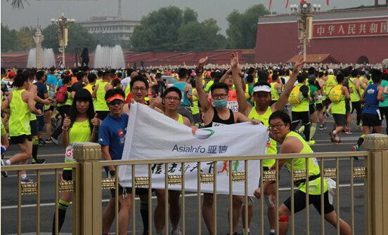

随着一封《CUC跑步俱乐部让你久等了！》的邮件发出，亚信CUC跑步俱乐部成立了！
因为之前没有申报，也没有提交预算，刚成立的跑步俱乐部暂时没提交到公司工会，而是在CUC内部先搞了起来！
虽然只有2位同事参与约跑活动，起码我们也算开张了！
第一次内部跑步分享会，队长详细讲解了跑步的各个环节和个人跑步体会，
有CUC、BDX、BIU各部门近20人参加！
开始备战北京马拉松，约跑活动暂停了！
俱乐部成立3个月后，14位亚信小伙伴征战北京马拉松，全部无伤安全快乐完赛！

南京小伙伴虽然少，但是活动积极性特别高
亚信Runner以奔跑接力的方式完成任务，体现亚信人团结、协作的“信力量”！
新年新气象，向工会提交了俱乐部2016年预算，同时正式更名为『亚信跑步俱乐部』！
契合公司Run for Asiainfo的宗旨，引领亚信健康文化！
正式成为亚信工会旗下正式俱乐部，再也不是“自称的”了！
开通 runClub@asiainfo.com 跑步俱乐部专用邮箱 和 runners@asiainfo.com 亚信跑者邮件群组
拓展展出北京、天津、南京、杭州、长沙 5个分部
为展现我亚信人的健康活力，定制亚信专属队服！
11位小伙伴，欢乐的奔跑，有男有女，有全程有迷你，有胖有瘦，有快有慢，无限欢乐
上有天堂下有苏杭，美丽的杭州，可爱的亚信人，最潮的亚信Runner
根据公司Logo使用规范重新定制新的Logo，并采用扁平化设计
11位亚信Runner，3位可爱的后援妹纸，组队参加《中国人寿•2016要跑•24小时城市接力赛•北京站》，24小时不停奔跑280km，亚信小伙伴们在挑战组197个队伍中排名45！
四面八方的小伙伴汇聚京城，痛并快乐着，大多数小伙伴还都PB了
一百多的人的微信群，看2个妹纸跑百公里，想想也是醉了
跑的慢不能怪我，只怪那风景太美！黑人兄弟不也跑错路了嘛。。。
杭州马拉松30周年，西湖美景，谁跑谁知道！
圣诞节，平安夜，你在吃苹果，我在做公益！跑步可以是孤独的，也可以是欢乐的，跑了，你就懂。。。
开光跑，借用佛教/道教开光之说，一年之始，冬去春来，第一次跑步，即为开光跑，祈福新的一年里身体健康，身心愉悦，工作事业生活家庭和谐美满！
3、2、1、17、跑！鼓励跑步，带动亚信健康的第一个俱乐部宣传小视频诞生！